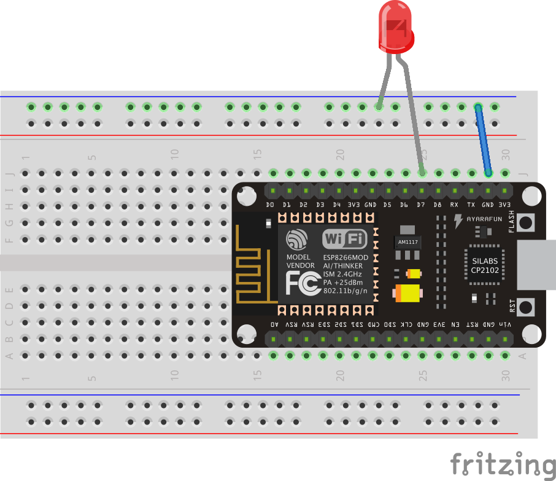

Exercise: NodeMCU Blink
Objective
Make a LED blink using the NodeMCU micro controller.
The NodeMCU is a wifi enabled micro controller based on the ESP8266 12E
chip. The NodeMCU is low cost and can be programmed using the Arduino IDE. Like
other Arduinos, it has GPIO pins that can be used to read sensors and control
actuation. Most Arduino sketches (especially all of the basic examples)
should work with minimal modification on the NodeMCU. Additionally, libraries have
been developed to allow the NodeMCU (and any other ESP8266 based board) to
send and recieve data over wireless.
While the NodeMCU has a fair number of digital pins, it only has 1 analog pin.
Watch out for that when designing your projects, you may need to use an I2C ADC board.
Additionally, many external ADC boards communicate via I2C which is not listed on the
pinout diagram. However, D1 (GPIO 5) is SCL and D2 (GPIO 4) is SDA which makes sense since
the Arduino’s I2C lines are A5 for SCL and A4 for SDA.
Unlike the Arduino Uno, the NodeMCU uses 3.3V logic. This means that the GPIO pins output
3.3V and can only tolerate up to 3.3V for input. This is why we don’t need a resistor in
series with our LED in the circuit. However, this means that any external chips you hook up
MUST be 3.3V or you will need to use a logic converter (also known as a level shifter).
All this does is take 5V and converts it to 3.3V and vice versa. You may need to use a logic
converter in order to have a high enough voltage to turn on some transistors. Double check
this if you need to drive a transistor using the NodeMCU.
Steps and observations
- First we need to get all the libraries for the NodeMCU so we can program it from
the Arduino IDE. This process is the same for many boards that use the Arduino IDE
(the URL in the next step changes for other boards).
- Open the Arduino IDE, and go to: Arduino->Preferences (Mac) or File->Preferences (PC),
and put this URL (http://arduino.esp8266.com/stable/package_esp8266com_index.json)
into the “Additional Boards Manager URLs” box.
- Open Tools->Board->Boards Manager and scroll until you find the
“esp8266 by ESP8266 Community” package. Click on it, and install the latest version.
There should now be a new section under Tools->boards that lists several ESP8266 boards.
- Build the circuit shown below.
- Bring up the Example Blink sketch. Even though it uses pin 13 this sketch and the circuit
below are correct. This is because the labels on the NodeMCU board do not match up with
the actual GPIO pin number. There are 2 solutions:
- Look at the image below with all of the GPIO pins marked (you will still want to
check this out no matter what because it lists the protocols for the different pins).
- Instead of writing 7 for our pin, write “D7”. The compiler for the NodeMCU will know
to switch this to 13.
No matter what you do, you should use #define statements at the top of your
code to define all of your pins with intelligable names (see:
#define reference)
- Under Tools, change the board to “NodeMCU 1.0 (ESP 12E Module)” (NOT “NodeMCU 0.9 (ESP 12 Module)”!!!).
You should see some new options pop up in the tools menu. You can leave these as the defaults
(should be: 80MHz CPU Frequency, 4M (3M SPIFFS) Flash size, and 115200 upload speed).
- Also under tools, check the port. Choose whatever is available (should be a non-bluetooth port on Mac,
or something COM4 or higher on PC). If there is no port available, or the one you have doesn’t work,
then you need drivers for the USB to serial chip which can be found
here.
- Hit upload, wait for it to finish, and you should be done!
Comments


Other Files
- NodeMCU-blink.fzz